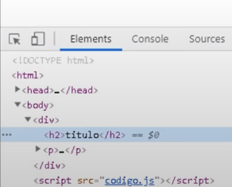
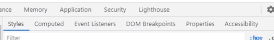
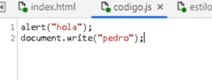
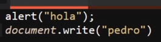

Google Developer Tools
Se tratan de todas aquellas herramientas que ofrece Google Chrome para debuguear (encontrar errores) en JavaScript, las cuales permiten conocer todo el uso de los recursos, el manejo de la memoria, encontrar errores más fácil entre otras utilidades.
Para esto las herramientas de desarrollador de Google nos permiten acceder a una serie de pestañas, cada una de estas pestañas contiene una o más herramientas con diversas funcionalidades, al hacer un correcto uso de cada una de estas se puede optimizar el trabajo y principalmente se pueden optimizar las labores de debugging del código de la página web, así como trabajar en sus recursos o rendimiento.
Nota: También es posible realizar una búsqueda de elementos o datos, esto al hundir los botones "Ctrl + F", de ese modo se desplegará un cuadro de texto que permitirá buscar elementos; el cual busque dependerá de cuál es la pestaña de herramientas seleccionada al momento de hundidos los botones, por ejemplo en "elements" se puede buscar elementos en base a su selector, xPath o su string, por otro lado en la etiqueta "console" se puede buscar datos Strings en los registros de esta.
Pestañas de las Herramientas de Desarrollador
Elements
-
Se trata de la pestaña por defecto al abrir las herramientas de desarrollador, permite visualizar el código HTML, así como también seleccionar e interactuar con cada uno de los elementos HTML de la página.

Interactuar con un Doble Click
Para seleccionar una interacción con los elementos HTML se puede hacer de varias formas, la primera es hacer "click derecho" en el elemento deseado, de ese modo se desplegará un menú con las siguientes interacciones:
Editar el texto del elemento
Editar la etiqueta del elemento seleccionado
Duplicar el elemento
Borrar el elemento
-
Ofrece diferentes formas de copiar el elemento:
Copiar con normalidad (duplicar el elemento)
Copiar "outerHTML" (copia todo el código HTML listo para ser pegado en otro documento.)
Copiar el selector CSS (genera la estructura de selectores adecuada para modificar el elemento, listo para pegarla en un documento CSS)
Copiar la ruta de JavaScript (Genera la estructura "querySelector" adecuada para seleccionar el elemento, listo para pegarlos en el documento JavaScript)
Copiar los estilos del elemento (literalmente copia cada una de las propiedades CSS y sus valores listos para pegarlos en un documento CSS)
Copiar el Xpath del elemento (se trata de la ruta de elementos que alojan el elemento actual, ejemplo: "/html/body/aside")
Copiar el xpath completo, (se trata de básicamente lo mismo que el xpath común, solo que en ciertos casos da más información)
Cortar y pegar el elemento
Ocultar el elemento
Forzar el estado del elemento (:active :hover :focus :visited :focus-visible focus-within)
Fecha de Interrupción, (también llamado "Break on")
Expandir de forma recursiva
Contraer etiquetas secundarias (elementos hijos)
Tomar una captura de pantalla del nodo
Desplazar el documento hasta que el elemento sea visible (permite encontrarlo en la visualización)
Enfocar el elemento
Interactuar con los menús secundarios
Otra forma de interactuar con los elementos es usando los menús secundarios de la herramienta, estos se encuentran debajo de la representación del código HTML de la página, y permiten tener un acceso más directo a las diferentes opciones que presentan estas herramientas.

-
Menú Estilos
Este menú surge al seleccionar un elemento, se despliega con todos los estilos CSS que posea este, y permite modificarlos libremente, forzar el estado (con el botón ":hov"), añadir clases (con el botón ".cls"), e incluso permite filtrar los estilos, entre muchas más opciones.
Nota: al cliquear sobre el recuadro de color de una propiedad de color se despliega el menú de selección de colores, el botón con símbolo de gotero permite seleccionar el color de un píxel en específico de la página, retornando el código hexadecimal de este, de ese modo se puede obtener el color de por ejemplo imágenes para usarla en la página.
-
Menú Computed (Calculados)
Permite ver el valor de las propiedades de dimensiones del elemento, "padding", "margin" y "Border", así como también modificar el valor de estos, para probar con diferentes dimensiones de una forma más visual.
-
Menú de Objetos de Escucha de Eventos (Event Listeners)
Este menú se utiliza para trabajar con los eventos JavaScript, se profundizará en esto en su respectivo apartado.
-
Menú Interrupciones del DOM
Este menú se utiliza para trabajar con recursos JavaScript más avanzados, se profundizará en esto en su respectivo apartado.
-
Menú Propiedades
Enlista todas las propiedades poseídas por el elemento seleccionado, también se puede lograr exactamente lo mismo escribiendo "$0" desde la pestaña de consola
-
Menú Accesibilidad
Este menú no es usado en la gran mayoría de los casos, por tanto no es planteado dentro del curso.
Nota: Los cambios realizados en la página desde la pestaña "Elements" pueden ser deshechos con las teclas "Ctrl + Z", a su vez los cambios pueden volver a ser realizados con las teclas "Ctrl + Y"
Console
-
Esta pestaña ya fue explicada en detalle en el nivel 1 del curso, sin embargo aquí se definen los diferentes niveles de filtrado de la consola:
Se tratan de filtros que se aplican a los elementos guardados en consola, los niveles de filtrado son:
All: Muestra todos los resultados de la consola
Errors: Únicamente muestra los resultados de console.error
Warnings: Únicamente muestra los resultados de console.warn
Info: Únicamente muestra los resultados de console.info
Logs: Únicamente muestra los resultados de console.log
Sources (Fuentes)
-
Esta pestaña está enfocada en trabajar directamente con cada uno de los archivos que están dentro del directorio del documento en cuestión, esta pestaña permite acceder a los archivos, y modificarlos directamente desde el navegador, permitiendo de este modo experimentar con el código de los documentos directamente desde el navegador.
Cambio Realizado

Resultado

Como se puede apreciar en este ejemplo los cambios realizados desde la pestaña "sources" de las herramientas del navegador generaron cambios en el código del elemento.
Nota: para guardar los cambios efectuados se presionan los botones "Ctrl + S"
Nota: No todos los navegadores trabajan igual, por ejemplo Opera pese a estar basada en Chrome no permite modificar los documentos desde esta pestaña.
Esta pestaña también cuenta con la capacidad de aplicar las siguientes herramientas:
Watch (Supervisión)
Scope (Alcance)
Breakpoints (Puntos de Interrupción)
XHR/fetch Breakpoints (Interrupción de Recuperación)
DOM Breakpoints (Interrupciones del DOM)
Global Listeners (Objetos de Escucha Globales)
Event Listener Breakpoints (Interrupciones del Objeto de Escucha de Eventos)
También al dar clic derecho con el ratón sobre alguna de las carpetas o de los documentos del directorio se desplegarán interacciones extra que se pueden aplicar a los documentos, las cuales pueden variar dependiendo del navegador.
En la esquina superior izquierda se encuentran una serie de pestañas, cada una permite realizar una función en concreto:
Página: Permite interactuar con las carpetas y documentos del directorio
FileSystem: Permite importar carpetas o archivos propios directamente desde el equipo
-
Snippets: Se trata de fragmentos de código que se pueden guardar para ejecutarlos cuando se desee, ya que al ingresar un código en la consola del navegador este se perderá al refrescar la página, los fragmentos permiten crear y guardar un código para poder ejecutarlo cuando sea necesario sin volver a escribirlo desde 0, convirtiéndose en una herramienta muy útil a la hora de ejecutar códigos muy largos repetidas veces en la página.
Nota: para ejecutar el "Snippet" este tiene que ser seleccionado y luego se hunden los botones "Ctrl + Enter"
Nota: En Google los Snippets se guardan para futuras ocasiones, aún si se cierra el documento el "Snippet" permanecerá en memoria para un futuro, del mismo modo haciendo clic derecho junto con varias alternativas, se puede guardar el "Snippet" como un archivo en el equipo.
Network (Red)
-
Se trata de una pestaña enfocada en analizar el comportamiento del código a la hora de cargar la página, esta pestaña brinda todo tipo de información sobre la carga de los diferentes archivos o elementos de esta, información como nombre, tipo, elemento que lo inicializa, tamaño, tiempo que demoró en cargar etc.
Esta pestaña incluso brinda información como el número de solicitudes realizadas, cantidad de datos transmitidos, peso de los archivos, tiempo total de la carga de la página y tiempo que tardó el DOM en cargar, en pocas palabras en esta pestaña se encuentra toda la información necesaria para analizar el rendimiento del código en profundidad, así como la secuencia de esta.
En la parte superior de la pestaña se encuentra una sección dedicada particularmente a las numerosas formas que se tienen de filtrar los archivos del análisis, permitiendo de este modo ubicar cualquier archivo de interés, sin importar el tipo de este.
A su vez al hacer clic derecho sobre un elemento se abre un menú con múltiples opciones, entre las cuales se encuentran recursos muy útiles a la hora de trabajar:
Block Request URL: Permite bloquear las solicitudes del elemento seleccionado, por lo tanto se inhabilita la carga de este
Block request Domain: Esta opción bloquea el acceso de los elementos a su dominio en la web, por lo tanto se inhabilita la conexión de los elementos con su servidor
Opciones de Copiado: Existen múltiples formas de copiar los diferentes elementos cargados por una página, sin embargo no es una opción particularmente útil en estos casos así que no se profundizará sobre esto
Guardar: Se pueden guardar en el equipo los diferentes elementos cargados por la página
Clear Browser cache: Permite borrar los datos guardados en la caché del equipo que hayan sido cargados por este elemento
Clear Browser cookies: Permite borrar los datos guardados en las cookies del equipo que hayan sido cargados por este elemento
Nota: Con clic derecho entre otras se encuentra la opción de "sort By" (ordenar) la cual permite organizar los elementos de carga de la forma que se considere más conveniente.
Nota: También se encuentra la opción de "header options" la cual permite seleccionar qué datos de los elementos se mostrarán en el análisis, de ese modo se pueden contemplar aún más datos de los que se brindan por defecto.
Timeline / Performance
-
Esta pestaña está enfocada específicamente en realizar un análisis en profundidad del rendimiento de la página en cuanto a recursos se refiere, cada aspecto por irrelevante que parezca es captado, plasmado y especificado en esta pestaña, por lo tanto esta pestaña permite al desarrollador conocer con precisión cuántos recursos consume cada elemento.
Para realizar un análisis tan preciso esta pestaña lo que hace es "grabar" la ejecución de todos los recursos utilizados por la página durante el periodo de tiempo indicado, una vez concluida la grabación todos los datos recolectados son plasmados en una serie de gráficos y mostrados al programador, para que de este modo se puedan analizar con precisión.
Para grabar los procesos de la página esta pestaña cuenta con dos opciones:
-
Start Recording (Iniciar Grabación): Esta opción permite iniciar la grabación desde el momento en el que se pulse el botón hasta que esta sea detenida
-
Record the Page Load (Recargar y registrar): Esta opción a la vez que inicia la grabación (registro) del consumo de recursos de la página reinicia la carga de esta, de ese modo se puede registrar en detalle todo el proceso de carga de la página desde cero (0).
Los registros de recursos generados por esta pestaña son tan detallados que incluso contienen la información de "Network (red)", sin embargo en esta ocasión los datos son plasmados de una forma diferente, para que complemente la demás información transmitida.
En sí los datos plasmados en estos registros es información muy específica, por lo tanto debido a lo avanzado de estos y lo extenso no son contemplados por el curso más allá de lo ya dicho.
Nota: Ya que profundizar en los datos mostrados por esta pestaña es complejo, por lo general esta se utiliza únicamente en aquellos casos en los que la página sufra retrasos al cargar, no se complete la carga de un recurso o algún tipo de problema que amerite un análisis detallado.
Nota: Para un análisis más simple con las herramientas de desarrollador abiertas se hunden los botones "Ctrl + Shift + P", esto abre un cuadro de búsqueda de herramientas, en el cual se ingresa el nombre "Show Performance Monitor", esto abre un cuadro en la parte inferior en el que se plasma una gráfica a tiempo real del consumo de recursos de la página; es un análisis mucho más superficial que una grabación de recursos, pero es más que suficiente para la mayoría de los casos.